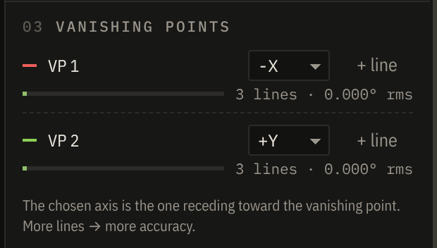
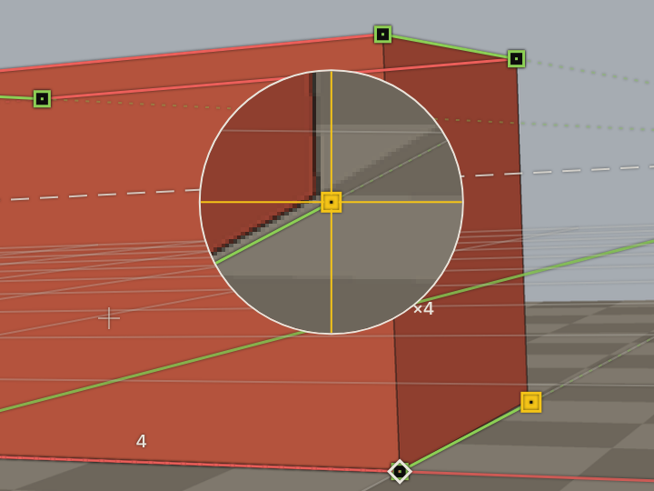
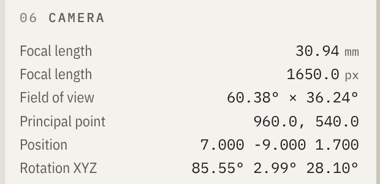

02Installing
Download, open, done.
Installers for every platform are on the Releases page: github.com/fugaapp/fuga/releases. Fuga is free; installers are not signed with a paid certificate, so your system asks once before the first launch.
Windows .exe
- Download
Fuga-x.y.z-win-x64.exe and run it.
- If you see "Windows protected your PC", click More info → Run anyway.
- Choose a folder and whether to install for all users.
macOS .dmg · Apple silicon + Intel
- Download the
arm64 (M-series) or x64 (Intel) DMG and drag Fuga to Applications.
- On first launch macOS says it can't be opened: go to System Settings → Privacy & Security and click Open Anyway.
Linux .AppImage
- Download
Fuga-x.y.z-linux-x86_64.AppImage.
- Make it executable:
chmod +x Fuga-*.AppImage, then double-click it.
- If your distribution blocks the sandbox, start it with
--no-sandbox.
Staying up to date
When a new version is published, Fuga shows a yellow notice in its top bar — Fuga 0.2.0 available — that opens the download page. It never installs anything by itself. You can turn the automatic check off in Help → Check for Updates Automatically.
Running from source
# Node.js 22.12 or newer
git clone https://github.com/fugaapp/fuga.git
cd fuga && npm install
npm run dev # open the app
npm test # precision tests
FUGA · USER GUIDE03
03A tour of the window
 1
2
3
4
5
1
2
3
4
5
1Top barProject name, update notice, Appearance, Undo / Redo.
2ViewportYour photo, the line groups, ground grid and horizon. Scroll to zoom, drag empty space to pan.
3InspectorMethod, vanishing points with a quality meter, lens, scale, overlay, export.
4CameraThe live result: focal length in mm and px, field of view, position, rotation.
5Status barCursor in image pixels, zoom, loupe level, and whether the camera is solved.
FUGA · USER GUIDE04
04Matching a camera · 1 of 2
01
Open a photo
Drag it onto the window or press Ctrl/⌘ O. PNG, JPG, WEBP, AVIF, BMP and GIF all work. Use the original file: cropping or resizing is fine, but avoid photos that were straightened or perspective-corrected in an editor.
02
Choose a method
2 VP suits most architecture and interiors. Use 3 VP when vertical edges also converge (shot looking up or down), and 1 VP when only one direction converges and you know the focal length. Page 07 explains each.
03
Trace parallel edges
Each colour is one group of edges that are parallel in the real world. Drag the square handles onto them; drag a line's body to move it whole. Then pick, for each group, the world axis that recedes from the camera toward its vanishing point.
Long edges, far apart, give the best result. Every extra line (+ line) makes the camera more accurate — fSpy only ever used two.

Each group shows its line count and how much its lines disagree, in degrees. A short green bar is good; past 0.35° Fuga warns you.
Reading the overlay
- Coloured lines — your traced edges, X red, Y green, Z blue; dashed extensions run to the vanishing point.
- Grid and horizon — the solved ground plane. If it sits on the floor of your photo, the camera is right.
- ◯ origin, ◇ reference, + principal point — see the next page.
FUGA · USER GUIDE05
04Matching a camera · 2 of 2
04
Set the origin and the scale
Drag the ◯ to the point that should become (0, 0, 0) in your 3D scene — a floor corner is ideal. For real-world scale, turn on Reference distance, choose the axis, type a known length (a 2.1 m door, a 0.6 m tile) and drag the ◇ to the other end. It slides along the axis by itself.
05
Check
The grid should lie flat on the floor and the horizon should pass through the vanishing points. Zoom in and refine the endpoints: watch the camera values settle and the quality meters shrink.
Precision tools: hold Shift while dragging for 10× finer movement, nudge the selected point with the arrows, and change the loupe magnification with [ ].
06
Export
One click in Export. Then save the project (Ctrl/⌘ S) to come back to it later — the .fuga file is small, readable JSON.

While you drag, the loupe magnifies real pixels — and your lines.

The solved camera updates live.
Undo anything
Every change, including each whole drag, is one step of undo. Ctrl/⌘ Z and Ctrl/⌘ Shift Z — or the buttons in the top bar.
Sensor size
The sensor width only changes how the focal length reads in millimetres; the framing is identical. Pick your camera's sensor (Full frame, APS-C…) so the number matches the lens you used.
FUGA · USER GUIDE06
09Shortcuts and troubleshooting
Shortcuts
| Open photo / project | Ctrl/⌘ O · Ctrl/⌘ Shift O |
| Save / Save as | Ctrl/⌘ S · Ctrl/⌘ Shift S |
| Undo / Redo | Ctrl/⌘ Z · Ctrl/⌘ Shift Z |
| Zoom | wheel or pinch, around the cursor |
| Pan | drag empty space |
| Fit photo / actual pixels | F or Ctrl/⌘ 0 · Ctrl/⌘ 1 |
| Fine drag | hold Shift |
| Nudge selected point | arrows 1 screen px · with Shift 0.1 px |
| Loupe magnification | [ ] |
| Delete selected line | Delete |
| Appearance | Ctrl/⌘ , |
When something looks wrong
| "Vanishing point N is at infinity" | That group's lines are parallel in the photo. Pick edges that visibly converge, or switch to 1 VP. |
| "…cannot come from perpendicular directions" | A group mixes edges from different directions, or both groups follow the same one. Re-check which edges belong together. |
| "Two vanishing points are assigned to the same world axis" | Give each group a different axis in the inspector. |
| Camera upside down or mirrored | Flip the sign of an axis (+X ↔ −X). The chosen axis must recede from the camera toward its vanishing point. |
| "Lines … disagree by 0.4° RMS" | One line is off, or the lens bends straight lines (wide angle). Zoom in, refine, or remove the outlier with Delete. |
| Scale looks wrong | Check the ◯ origin sits exactly on the corner and the ◇ reference on the far end of the known length. |
| "Photo not found" when opening a project | The photo moved. Keep it next to the .fuga file — paths are stored relative to it. |
| Something else | Report it: Help → Report a Problem. |
FUGA · USER GUIDE11